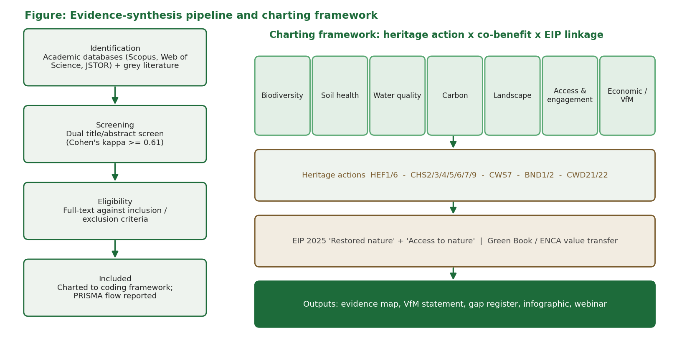
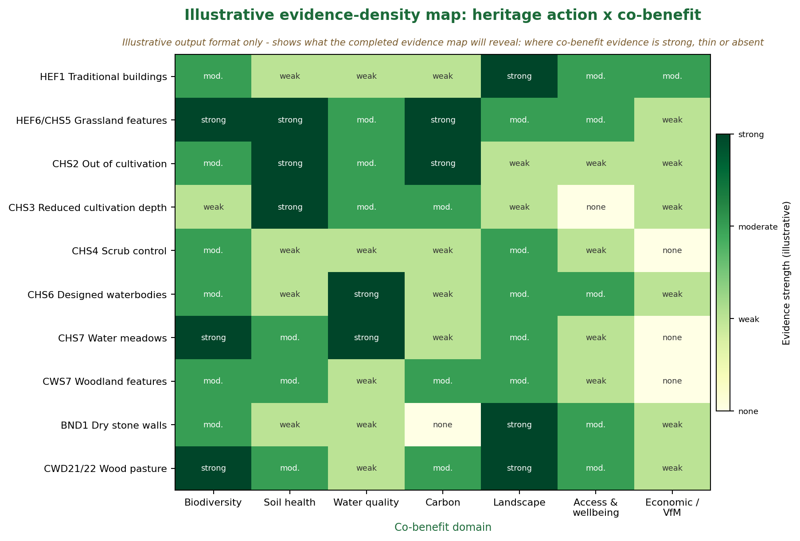

As nature recovery is delivered faster, at greater scale and under tighter budgets, heritage actions risk being overlooked unless their wider co-benefits for nature, people and the economy can be evidenced. Seventy-five per cent of Scheduled Monuments and all Registered Battlefields lie on farmland; eighty-four per cent of Scheduled Monuments at Risk are on farmland. This protocol specifies a transparent, replicable scoping review to establish a defensible baseline of the co-benefit evidence.
A scoping review (Arksey and O'Malley 2005; Levac et al. 2010; JBI 2020), reported per PRISMA-ScR (Tricco et al. 2018), operated to the Collaboration for Environmental Evidence Guidelines (v5.1, 2022) and aligned to Natural England's own evidence-review method (NEER001). Framed using Population-Concept-Context; structured database and grey-literature searching; dual independent screening with Cohen's kappa; a charting framework of heritage action x co-benefit x evidence strength x geography x EIP linkage; and an indicative value-for-money synthesis using HM Treasury Green Book and Enabling a Natural Capital Approach.


The evidence-density map above is an illustration of the output format, not findings.
Download the full protocol (PDF)